第 1 頁Z 世代與 α 世代如何重塑時尚產業
HOW GEN Z × GEN ALPHA ARE REWIRING THE FASHION INDUSTRY
首屆《WWD × BCG 時尚未來報告》（Inaugural WWD × BCG Future of Fashion Report）｜2025 年 10 月（OCTOBER 2025）
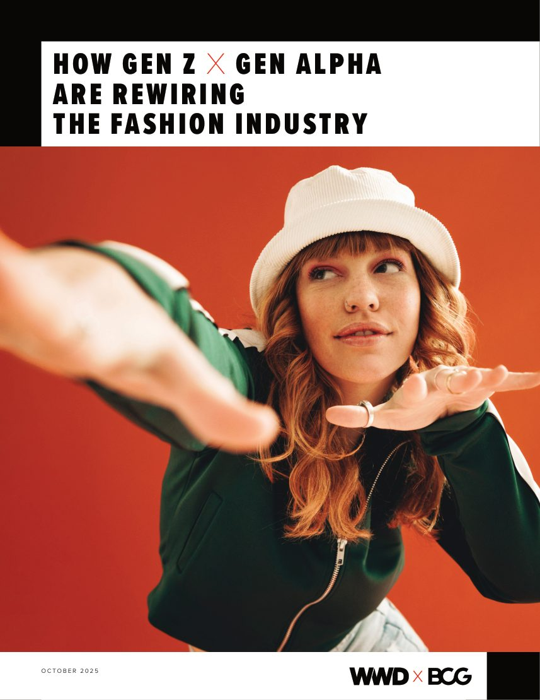
第 2 頁執行摘要（Executive Summary）
REWIRING FASHION｜重塑時尚
核心背景與研究緣起
次世代時尚族群（Fashion’s Next Gen）——亦即 Z 世代（Gen Z）與 α 世代（Gen Alpha）——預計將在未來十年間占據整體時尚消費支出的 40%。凡能及早調整市場進入策略（Go-to-Market Strategies）的品牌，都將贏得超乎比例的市場份額並實現更快速的成長。
首屆《WWD × BCG 時尚未來報告》（WWD × BCG Future of Fashion Report）深入剖析美國「次世代時尚族群」的消費者洞察。本研究奠基於針對約 9,000 名美國消費者的調查檢視、社群媒體輿情傾聽（Social Media Listening），以及與成功擄獲年輕世代之品牌執行長（CEO）的深度訪談。
| 關於「次世代時尚族群」的五大關鍵洞察 （預計將驅動超過 40% 的美國時尚消費支出） |
贏得「次世代時尚族群」的五大制勝策略 （BCG 與 WWD 剖析領導品牌調適之道所歸納的關鍵策略） |
|---|---|
| 洞察 1：Z 世代依循一套截然不同的新規則運作——明顯有別於過往世代——徹底重新定義了品牌探索（Discovery）與產品互動方式。 | 策略 1：明確界定品牌欲獲取的目標消費者：建立清晰的定位、目標客群輪廓與關鍵績效指標（KPIs）。 |
| 洞察 2：品牌歷史傳承（Brand Heritage）不再保證價值；青年文化（Youth Culture）決定了哪些品牌能贏得消費者的購買考量（Consideration）。 | 策略 2：聚焦青年文化。透過創作者（Creators）、跨界聯名合作（Collaborations）與產品設計來建立真實性（Authenticity）。 |
| 洞察 3：社群媒體已成為全新主戰場，正從傳統線性「行銷漏斗（Funnel）」轉向循環放大的「飛輪效應（Flywheel）」。 | 策略 3：從「品牌單向控管」轉向釋放「創作者能量（Creator Energy）」，並全面啟動社群商務引擎（Social Commerce Engine）。 |
| 洞察 4：購物習慣正經歷翻天覆地的劇變，高達 40% 的 Z 世代使用人工智慧（AI）工具進行購物；品牌必須積極調適方能維持競爭力。 | 策略 4：為「代理式引擎最佳化（Agent Engine Optimization, AEO）」做好準備，並優先布局 AI 搜尋以守護流量。 |
| 洞察 5：這個世代將「產品」置於「品牌」之上，更加凸顯價格（Price）與品質（Quality）等商業基本盤的重要性。 | 策略 5：專注於定價、折扣與品質等核心基本面——針對驅動購買轉換（Conversion）的關鍵要素進行投資。 |
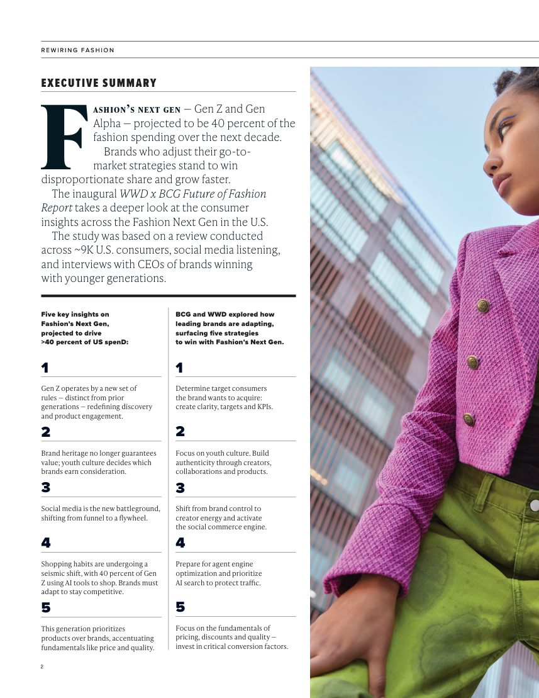
第 3 頁美國時尚未來研究方法論（Future of U.S. Fashion Study Methodology）
本研究結合大規模量化消費者調查、社群大數據傾聽、企業領袖深度質性訪談與產業專家研判，建構出全方位的美國跨世代時尚與奢侈品消費資料庫：
| 研究維度與規模 | 方法論內容說明 |
|---|---|
| 9,000+ 份（9K+） | 美國消費者對「BCG 消費者調查（BCG Consumer Surveys）1」之有效填答樣本，深入探討跨世代消費者在時尚與奢侈品領域的偏好與期待。 |
| 50,000+ 則（50K+） | 涵蓋各大社群媒體平台之貼文與輿情分析（Social Media Channels）。 |
| 10 場 | 與成功贏得年輕世代青睞之產業領袖（品牌 CEO 與高階主管）進行的一對一深度專訪（In-depth 1:1 Interviews）。 |
| 全球專家與媒體協作 | 匯集 BCG 全球時尚與奢侈品領域專家團隊，以及《WWD》資深時尚財經記者共同參與研析。 |
註 1：美國調查結果分別於 2025 年 6 月（樣本數 N = 4,377）及 2025 年 8 月（樣本數 N = 5,838）蒐集完成。
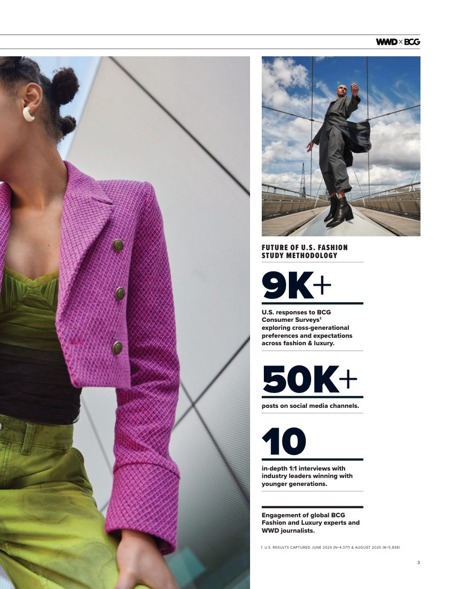
第 4 頁篇章視覺過渡頁：重塑時尚（Rewiring Fashion）
［第 4 頁為「REWIRING FASHION（重塑時尚）」全版影像過渡頁，呈現年輕世代於日常戶外互動交流之紀實攝影，象徵時尚話語權由品牌單向傳播轉向年輕世代的同儕對話與真實生活場景。］
第 5 頁十年前我們對次世代時尚族群的預測 vs. 今日實際發生的真相
原文標題：WHAT WE PREDICTED ABOUT FASHION’S NEXT GEN 10 YEARS AGO AND WHAT ACTUALLY HAPPENED.
回顧十年前時尚產業對下一個世代消費者的主流預測，對比今日 Z 世代與 α 世代實際展現的消費行為，產業假設發生了根本性的翻轉：
| 十年前（10 YEARS AGO） 當時對「次世代時尚族群想要什麼」的預測 |
今日現況（TODAY） 今日「次世代時尚族群真正想要什麼」 |
|---|---|
| 具品牌忠誠度（LOYAL）：預期年輕消費者一旦認同品牌理念，便會建立長期穩固的單一品牌忠誠。 | 勇於實驗嚐鮮（EXPERIMENTAL）：不拘泥於單一品牌，熱衷跨品牌混搭、探索新興風格與多元嘗試。 |
| 重視品牌歷史傳承（BRAND HERITAGE）：認為百年工藝、品牌歷史底蘊與經典符碼足以確保品牌吸引力。 | 重視文化共鳴與關聯性（CULTURAL RELEVANCE）：品牌是否貼近當下青年文化脈動，遠比歷史資歷更具決定性。 |
| 受大型廣告活動驅動（CAMPAIGNS）：仰賴品牌主導的季度形象大片與大型整合行銷活動建立聲量。 | 社群優先的敘事方式（SOCIAL-FIRST STORYTELLING）：由原生社群內容、創作者視角與即時互動主導品牌故事傳播。 |
| 線性購物旅程（LINEAR JOURNEYS）：遵循「認知 → 考量 → 購買」的循序漸進式線性消費漏斗。 | 碎片化且由 AI 主導的購物旅程（FRAGMENTED, AI-LED JOURNEYS）：橫跨串流、滑動態、搜尋與 AI 購物的非線性、多觸點體驗。 |
| 買得更少、買得更好（BUY LESS, BUY BETTER）：預期年輕世代將全面轉向極簡減量、高單價長效投資型消費。 | 受潮流趨勢驅動（TREND-DRIVEN）：緊跟高速更迭的微趨勢（Micro-Trends），同時精打細算追求極致性價比與當下表現力。 |
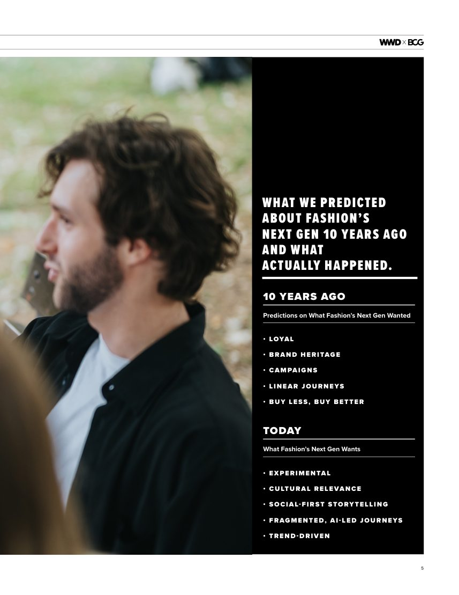
第 6 頁第 7 頁贏得次世代時尚族群：定義美國時尚產業的五大趨勢
第 6 頁篇章導言標題：重塑時尚：贏得次世代時尚族群的青睞（REWIRING FASHION: WINNING WITH FASHION’S NEXT GEN）——［第 6 頁搭配年輕世代於球場邊陽光下自在交談之全版視覺攝影，揭開五大核心趨勢章節序幕。］
第 7 頁定義美國時尚的五大趨勢（5 Trends Defining U.S. Fashion）
- 趨勢一（全新遊戲規則）：次世代時尚族群遵循一套與過往世代截然不同的規則運作；過去針對年長世代奏效的行銷與經營策略，對這群年輕受眾將不再管用。
- 趨勢二（青年文化定生死）：對年輕消費者而言，歷史傳承（Heritage）不再決定品牌價值；青年文化（Youth Culture）才決定了誰能贏得消費者的購買考量。
- 趨勢三（社群商務飛輪）：隨著各大平台演進為全方位的商務引擎（Full Commerce Engines），社群媒體已成為全新主戰場，驅動行銷模式從「漏斗（Funnel）」轉向「飛輪（Flywheel）」。
- 趨勢四（AI 購物革命）：人工智慧（AI）已以震撼規模滲透時尚購物領域，高達 40% 的年輕消費者正使用 AI 進行購物，迫使品牌必須破解這組全新密碼方能勝出。
- 趨勢五（產品導向與基本盤）：這個世代屬於「產品驅動（Product-Driven）」而非「品牌驅動（Brand-Driven）」，高度凸顯價格與品質等核心基本面的重要性。
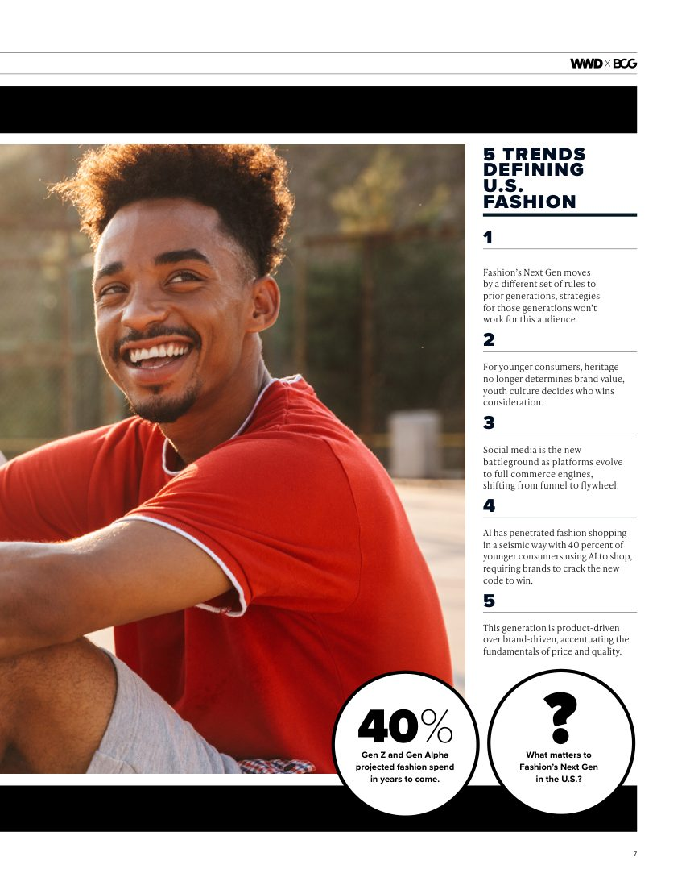
第 8 頁趨勢一：年輕次世代時尚族群遵循截然不同的遊戲規則
YOUNG FASHION’S NEXT GEN MOVES BY A DIFFERENT SET OF RULES — STRATEGIES FOR PRIOR GENERATIONS WON’T WORK FOR THIS AUDIENCE.（過往世代的策略對這群受眾不再奏效）
第 9 頁趨勢一核心剖析：期待清單、線上社群旅程與自我認同
1. 這個世代對所購時尚單品的期待清單日益增長（This Generation Has a Growing List of Expectations for the Fashion They Buy）
與超過 28 歲的族群相比，服飾支出占這個年輕世代總開銷的比重更高，且他們對自身穿搭風格懷抱著更長串的需求與渴望。儘管預算較為緊縮，但憑藉強烈的自我表達（Self-Expression）慾望，他們傾向選擇能讓自己感到有趣（Fun）、真實（Authentic）且成功（Successful）的穿搭造型，並希望這些單品能讓自己在同儕之間宛如一名具號召力的網紅／影響者（Influencer）。他們渴望給周遭的人留下深刻印象，但卻不願意為此支付高昂的品牌溢價（Premium）。
2. 他們的購買旅程紮根於線上社群（Their Purchase Journeys Are Based in Their Online Community）
對這個世代而言，最關鍵的購買接觸點（Purchase Touch Points）包括：線上搜尋研究、滑看網紅內容（Scrolling Influencer Content），以及徵詢朋友與家人的意見。然而值得注意的是，即便數位影響力持續攀升，實體門市瀏覽（In-Store Browsing）依然是最受歡迎的探索模式。
3. 自我認同是次世代中更年輕「α 世代」的核心（Identity Is the Core for the Younger Gen Alpha Portion of This Next Generation）
風格穿搭不僅僅關乎外在美學（Aesthetics）——更關乎「他們是誰」。傳統的品牌槓桿（例如品牌故事或歷史傳承），其重要性已不如真實性（Authenticity）與自我定義（Self-Definition）。
品牌應邀請年輕世代共同創作（Co-create）並塑造品牌認同，而不僅僅是單向消費品牌——從產品設計到故事敘事皆然。凡能結合年輕世代的文化、幽默感與創造力共同建設的品牌，將能鍛造出真實的文化關聯性與長遠的情感連結。
第 10 頁世代定義與跨世代消費支出結構差異
世代定義：Z 世代與 α 世代即為「次世代時尚族群」（Defining the Generations; Gen Z and Gen Alpha Are Fashion’s Next Gen）
根據皮尤研究中心（Pew Research Center）之世代劃分架構，本報告將年長 α 世代與 Z 世代共同界定為引領未來十年產業變革的「次世代時尚族群（The Fashion Next Gen）」：
| 比較維度 | 年長 α 世代 （Older Gen Alpha） ［次世代時尚族群］ |
Z 世代 （Gen Z） ［次世代時尚族群］ |
千禧世代 （Millennials） |
X 世代 （Gen X） |
嬰兒潮世代 （Baby Boomers） |
|---|---|---|---|---|---|
| 出生年份（Birth years） | 2013–2016 年 | 1997–2012 年 | 1981–1996 年 | 1965–1980 年 | 1946–1964 年 |
| 目前年齡（Age today） | 9–12 歲 | 13–28 歲 | 29–44 歲 | 45–60 歲 | 61–79 歲 |
| 人生階段特徵（Life stage） | 較年幼的 α 世代仍為兒童；年長 α 世代則為就讀國中的青少年前期族群（Tweens，9–12 歲）。 | 較年輕的 Z 世代通常就讀高中與大學；年長 Z 世代則正處於建立職涯起步階段。 | 處於職涯中期的專業人士，多育有年幼家庭；需應對較高的生活成本與家庭優先事務。 | 職涯發展成熟穩定；需同時兼顧年邁父母、年長子女以及長期財務規劃。 | 已退休或正逐步退出職場；生活重心聚焦於健康、休閒娛樂及退休後的生活型態穩定。 |
資料來源：皮尤研究中心（Pew Research Center）。
次世代時尚族群將支出集中於服飾、鞋類與其他商品，而 29 歲以上族群則花費於餐飲與旅遊
與 29 歲以上族群相比，這個年輕世代將零用與可支配支出中高出總計 7 個百分點（7%）的比例花費在「服飾與鞋類」上，而在「外食餐飲與旅遊」上的支出比重則少了 10 個百分點（10%），使服飾與鞋類成為他們最核心的消費品類。
| 消費品類（Category） | 支出占比差異（<29 歲次世代 vs. 29+ 歲族群） | 消費傾向解讀 |
|---|---|---|
| 服飾（Clothing） | +4 個百分點（+4pp） | <29 歲年輕世代支出占比顯著較高（高居第一） |
| 鞋類（Shoes） | +3 個百分點（+3pp） | <29 歲年輕世代支出占比顯著較高（服飾＋鞋類合計 +7pp） |
| 電玩、娛樂與嗜好（Gaming, entertainment and hobbies） | +2 個百分點（+2pp） | <29 歲年輕世代支出占比較高 |
| 運動健身與體育用品（Exercise and sporting goods） | +2 個百分點（+2pp） | <29 歲年輕世代支出占比較高 |
| 美妝與個人保養品（Beauty and personal care products） | +1 個百分點（+1pp） | <29 歲年輕世代支出占比略高 |
| 戶外／線下體驗活動（Out of home experiences） | +1 個百分點（+1pp） | <29 歲年輕世代支出占比略高 |
| 運動服飾（Sportswear） | +1 個百分點（+1pp） | <29 歲年輕世代支出占比略高 |
| 美容與個人護理服務（Beauty and personal care services） | 0 個百分點（0pp） | 兩世代支出占比持平 |
| 健康與保健產品（Health and wellness products） | -1 個百分點（-1pp） | 29+ 歲年長世代支出占比略高 |
| 奢侈品（Luxury goods） | -1 個百分點（-1pp） | 29+ 歲年長世代支出占比略高 |
| 居家用品（Home products） | -2 個百分點（-2pp） | 29+ 歲年長世代支出占比較高 |
| 外食餐飲／酒類（Dining out / Alcohol） | -2 個百分點（-2pp） | 29+ 歲年長世代支出占比較高 |
| 旅遊（Travel） | -8 個百分點（-8pp） | 29+ 歲年長世代支出占比大幅高出（餐飲＋旅遊合計差距 -10pp） |
資料來源：BCG《2025 年時尚與奢侈品現況調查》（BCG State of Fashion and Luxury Survey 2025）。
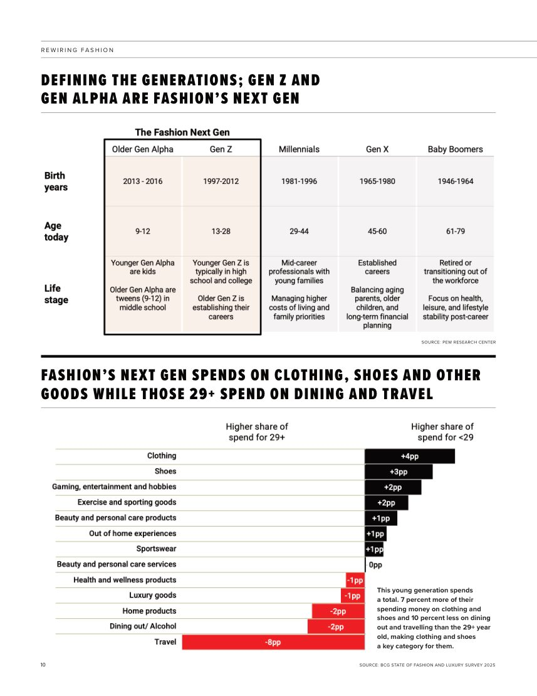
第 11 頁次世代時尚消費者對「時尚能為自己帶來什麼」抱持日益多元的期待
原文標題：FASHION’S NEXT GEN SHOPPERS HAS A GROWING LIST OF EXPECTATIONS ON WHAT FASHION CAN DO FOR THEM
相較於其他年長世代主要聚焦於實用性、耐穿度與舒適感，次世代時尚消費者將服飾視為心理賦能、社群影響力與身分投射的多元載體：
| 次世代時尚族群重視的面向（Fashion’s Next Gen Cares About） | 其他世代重視的面向（What Everyone Else Cares About） |
|---|---|
|
|
資料來源：BCG《2025 年時尚與奢侈品現況調查》（BCG State of Fashion and Luxury Survey 2025）。
第 12 頁全通路探索行為與「想驚豔他人卻精打細算」的價格態度
次世代時尚族群更常轉向網紅、較少依賴 Amazon，但仍高度仰賴實體門市瀏覽來影響購買決策
比較 29 歲以下年輕消費者與 29 歲以上消費者在購買決策中各資訊通路的重要性排序（由高至低），可清楚觀察到兩世代在「Amazon 搜尋」與「網紅貼文」上的顯著分歧，以及「實體門市瀏覽」跨世代不墜的龍頭地位：
| 通路重要性排序 | 購買前探索與影響通路（Channel） | 跨世代比較特徵（<29 歲次世代 vs. 29+ 歲族群） |
|---|---|---|
| 1 | 在實體門市瀏覽（Browsed in a physical store） | 兩世代皆高居最重要通路第 1 名（29+ 歲略高於 <29 歲） |
| 2 | 線上搜尋（Searched online） | 兩世代皆位居第 2 名，為核心數位起點 |
| 3 | 閱讀網路評價（Read online reviews） | 29+ 歲族群依賴度明顯高於 <29 歲族群 |
| 4 | 在 Amazon 上搜尋（Searched on Amazon） | <29 歲年輕世代使用度大幅低於 29+ 歲族群（年輕世代減少將綜合電商作為時尚搜尋首選） |
| 5 | 瀏覽品牌官方網站（Looked through brand website） | <29 歲族群重視度略高於 29+ 歲族群 |
| 6 | 查看品牌官方社群媒體（Looked at brand’s social media） | 兩世代重視程度相近 |
| 7 | 詢問朋友、家人或同事（Asked friend, family member, or colleague） | <29 歲族群更重視同儕與親友口碑意見 |
| 8 | 閱讀線上或紙本文章、部落格或專題報導（Read article, blog, or editorial） | 兩世代重視度皆偏低且相近 |
| 9 | 詢問門市店員（Asked store associate） | 兩世代重視程度相近 |
| 10 | 查看網紅／影響者貼文（Looked at influencer’s post） | <29 歲年輕世代重視度顯著飆高，遠超過 29+ 歲族群 |
| 11 | 參加在地活動（Attended local event） | 兩世代皆列為最次要接觸點 |
年輕世代渴望給他人留下深刻印象，但與 29 歲以上族群不同的是，他們較不願意為此支付高價
| 消費者態度陳述（Share of generation that agrees） | 次世代時尚族群（<29 歲） | 29 歲以上族群（29+ 歲） | 世代相對差異幅度 |
|---|---|---|---|
| 「我想給他人留下深刻印象」（I want to impress others） | 62% | 57% | +9%（年輕世代渴望驚豔他人的比例更高） |
| 「我願意為最好的產品支付更高價格」（I am willing to pay more for the best products） | 75% | 80% | -7%（年輕世代支付溢價的意願較低） |
次世代時尚購物者穿衣打扮是為了給人留下深刻印象——近半數（且在認同度調查中達 62%）的年輕購物者希望能驚豔周遭的人並獲得讚美。雖然 29 歲以上的世代同樣在意這一點，但其優先程度不如年輕世代強烈。
儘管渴望受到矚目與稱讚，年輕世代卻不願意像 29 歲以上族群那樣，輕易掏錢支付高昂代價。
因此，這群次世代時尚消費者選擇投入更多時間進行事前研究與價格比較（Price Comparison），以確保自己能用最合理的價格找到最出色的單品。
資料來源：BCG《2025 年時尚與奢侈品現況調查》（BCG State of Fashion and Luxury Survey 2025）。
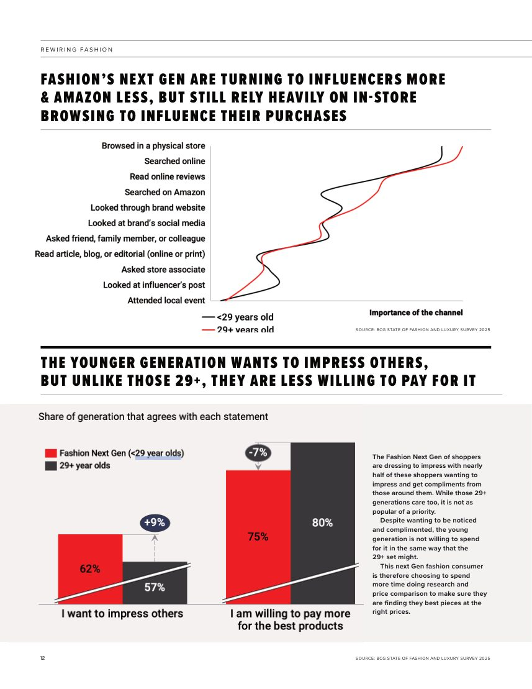
第 13 頁篇章視覺過渡頁：高速流動的零售場域
［第 13 頁為 WWD × BCG 全版紀實攝影頁，呈現購物中心多層交錯電扶梯上高速移動的人潮殘影，呼應實體零售與線上資訊流交織下快速變動的年輕世代消費節奏。］
第 14 頁次世代內部的世代異同：Z 世代與 α 世代范氏圖（Venn Diagram）解析
原文標題：WHILE THE TWO GENERATIONS WITHIN THIS NEXT FASHION GENERATION HAVE OVERLAP, THERE ARE DIFFERENCES（儘管次世代時尚族群中的兩個世代有所重疊，彼此之間仍存在顯著差異）
品牌不能將「次世代」視為單一均質鐵板。Z 世代與 α 世代雖共享五大核心特質，但在品牌歷史認同、懷舊年代座標、網紅偏好與價格敏感度上已浮現關鍵分水嶺：
| Z 世代獨有特徵 （Gen Z） |
兩世代共同重疊核心 （Gen Z ∩ Gen Alpha Overlap） |
α 世代獨有特徵 （Gen Alpha） |
|---|---|---|
|
|
|
第 15 頁智者之言（Words of Wisdom）：領導品牌如何透過真實性、價值觀與文化共鳴重新定義忠誠度
專欄導言：How leading brands are redefining loyalty by connecting with youth through authenticity, values, and cultural relevance
Jay L. Schottenstein｜American Eagle Outfitters 執行長（Chief Executive Officer）
主題：以使命感與連結引領品牌（Leading with Purpose and Connection）
「American Eagle 是規模最大且最歷久彌新的青年品牌之一，自 1977 年創立以來服務了一代又一代的年輕消費者。透過深刻理解年輕顧客真正在乎的事物——並且始終將他們放在第一位——我們穩固奠定了作為 Z 世代心目中『第一名牛仔褲品牌（#1 jeans brand for Gen Z）』的領導地位。
近 50 年來，我們憑藉對產品品質、合理定價、動人行銷以及『顧客至上（Customer-First）』理念的堅定承諾，建立了深厚的信任與忠誠度。American Eagle（AE）自創立之初便代表著包容（Inclusion）、歸屬感（Belonging）與自我表達（Self-Expression）。我們抱持樂觀態度並歡迎所有人。這些根本價值觀正是讓我們能持續與每一個新世代產生共鳴的關鍵差異化優勢。
當今的年輕消費者期望品牌主動走到他們所在的場域，並出現在他們最關心的事物之中。積極擁抱新興平台、文化時刻（Cultural Moments）與多元體驗，使 AE 得以站在話題中心並維持高度文化關聯性。我們在丹寧領域的絕對優勢，加上與娛樂界及體壇最具影響力人才的指標性合作，共同將 AE 定義為最具代表性的美國青年品牌。」
Jennifer M. Foyle｜American Eagle Outfitters 總裁暨執行創意總監（President & Executive Creative Director）
主題：透過自信、舒適感與社群建立忠誠度（Building Loyalty Through Confidence, Comfort and Community）
「Aerie 的魔力源自我們與顧客之間建立的真實關係。我們所做的一切，都是為了禮讚這個充滿熱情的社群所展現的真實之美。早在十多年前，Aerie 便是業界首批在形象廣告中讚頌女性『零修圖真實美感（Unretouched Beauty）』的品牌之一，所推出的 #AerieREAL 品牌平台至今仍持續激發女性的自信與自我賦權（Empowerment）。
在舒適度、時髦風格與親民價格帶的強大結合驅動下，Aerie 與 OFFL/NE by Aerie 的成功，奠基於顧客與品牌之間深厚的情感連結。我們的顧客希望無論生活帶她們走向何方，都能感覺棒極了。透過傾聽顧客心聲，我們迅速壯大了內搭緊身褲（Leggings）業務，在核心客群中躍居市場第 2 名，並在運動內衣品類位居第 3 名。隨著我們持續透過新型機能布料、季節限定發售（Seasonal Drops）與運動機能款式擴大在貼身衣物、日常服飾與運動休閒服的市占率，未來前景無比光明。
Aerie 不僅僅是一個品牌——它是一場運動。十多年前，Aerie 點燃了全球女性由內而外熱愛自己的力量；如今，我們正啟發全新世代延續這份精神，並始終堅守我們『永遠真實（Always and Forever Real）』的承諾。」
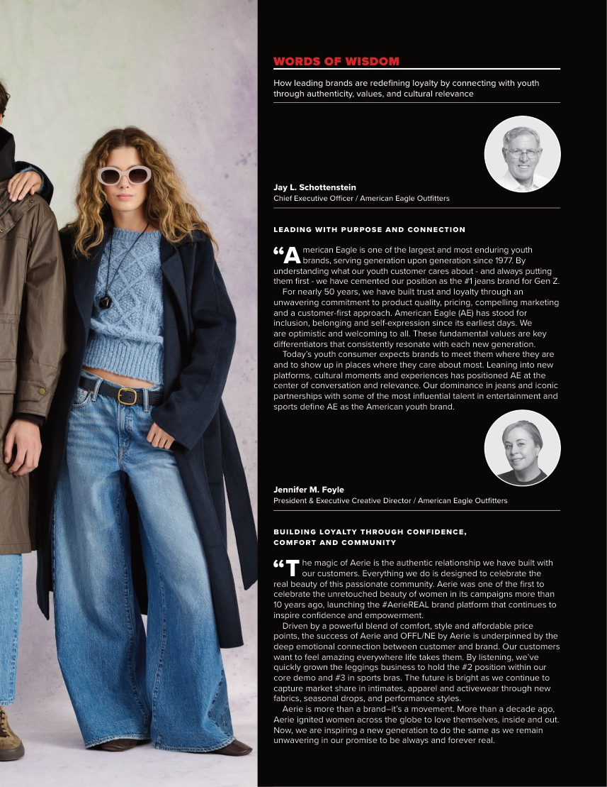
第 16 頁趨勢二：歷史傳承不再決定品牌價值——青年文化決定誰能贏得購買考量
HERITAGE NO LONGER DETERMINES BRAND VALUE — YOUTH CULTURE DECIDES WHO WINS CONSIDERATION.
第 17 頁趨勢二核心剖析：跨世代光環效應、急速病毒傳播與潮流發起者
1. 年輕世代主導「何謂時尚」（Younger Generations Drive What’s Fashionable）
獲得年輕世代背書的品牌往往能受惠於強大的跨世代光環效應（Cross-Generational Halo Effect）：當品牌成功擄獲 Z 世代與 α 世代的目光時，同時也會在年長消費者心中贏得公信力，被年長客群視為真正的時尚領航者。
2. 急速病毒式擴散（Rapid Virality）
隨著社群媒體崛起，文化潮流以極快速度擴張放大，留給品牌反應並把握聲勢變現的時間窗口極為有限。
3. 成為「潮流發起者」而非僅是「潮流引領者」（Trend Starters Over Trendsetters）
致勝的品牌懂得深植於青年文化之中，在熱潮攀上浪峰之前便精準切入關鍵時刻，並比其他競爭對手更早一步做出反應。
積極招募年輕世代人才，並將青年文化徹底注入產品研發、跨界聯名與創作者策略之中，即時掌握次世代時尚族群中「即將引爆」的最新文化脈動。
第 18 頁微趨勢半衰期壓縮與文化採用曲線解析
隨著社群崛起，文化潮流急速擴張，留給品牌反應並把握聲勢的時間極為有限
Z 世代與 α 世代之間的文化循環週期已大幅加速，裂解為在極短時間窗口內急遽飆升又迅速消退的微趨勢（Micro-Trends）。社群平台在放大探索效應的同時，也不斷餵養無止境的新鮮感，大幅壓縮了文化關聯性的半衰期（Half-Life）。串流影音內容的熱門程度便鮮明印證了這一點：線上搜尋熱度往往在急遽衝上頂峰後，於短短一至兩週內暴跌 50% 至 75%。
在這樣的環境下，贏家能夠預判趨勢、在熱度巔峰時果斷出擊，並且以真實不造作的方式呈現。當某個微趨勢與品牌基因（Brand DNA）契合時，注意力便能迅速轉化為實際購買——尤其當社群頻道日益具備原生結帳（Native Checkout）功能、直接扮演線上店面（Storefronts）角色之際。
隨著這些年輕世代購買力持續增長，競爭賭注也隨之升高：品牌必須以前所未有的速度交付產品，因為商機窗口如今僅維持「數週」，而非過去的「數季」。成功與否，取決於能否及早察覺微弱訊號，並在趨勢進入大眾主流之前率先行動。
| 2025 年熱門串流影視案例（Google Trends 週搜尋熱度指數 0–100） | 搜尋熱度演變特徵（2025/1/1 – 2025/10/1） |
|---|---|
| 《最後生還者》（The Last of Us） | 2025 年 4 月中旬迅速衝上峰值（100），隨後於 1–2 週內陡降逾半，後續隨集數更新出現短暫次波峰後快速回落。 |
| 《魷魚遊戲》（Squid Game） | 2025 年 6 月底至 7 月初呈現垂直式暴衝登頂（100），但在短短兩週內搜尋熱度即驟降 50%–75% 以上。 |
| 《夏日之戀》（The Summer I Turned Pretty） | 2025 年 7 月中旬急遽攀升至峰值，隨後呈現快速震盪滑落，反映社群話題熱度窗口高度壓縮。 |
| 《KPop 獵魔女團》（KPop Demon Hunters） | 2025 年 8 月初衝上搜尋高峰後迅速回檔，展現典型的次世代微趨勢爆發與消退曲線。 |
| 《星期三》（Wednesday） | 2025 年 8 月中下旬登頂後於數週內快速降溫，印證商機窗口以「週」而非「季」計算。 |
資料來源：Google Trends（每週搜尋熱度標準化為 0–100，各影集均以其自身最高熱度設為 100）。
致勝品牌深入青年文化並領先同業反應，在熱潮達到頂峰前精準切入關鍵時刻
要贏得 Z 世代青睞，意味著必須成為文化的一部分，而非事後盲目追趕潮流。最能引發共鳴的品牌從不單純跟隨趨勢——他們主動塑造趨勢，從而贏得作為「文化驅動者（Cultural Drivers）」的公信力。
正因為文化浪潮興起與擴散的速度史無前例，成功來自於及早洞察下一個風向，並在它成為大眾主流之前真誠現身。這需要將「對的產品」與「對的文化時刻」精準配對，並無縫編織進年輕消費者的日常生活型態之中。
並非每一次實驗都會大獲全勝，但保持敏捷（Agile）並對「測試與學習（Test-and-Learn）」抱持開放態度的品牌，才是最有資格領跑產業的贏家。
| 文化與趨勢採用階段（Adoption of Ideas and Trends） | 品牌公信力與真實性（Brand Credibility & Authenticity） | 消費者觀感與行銷成效評估（BCG 分析模型） |
|---|---|---|
| 1. 潮流發起者（Trend Starters） | 極高（曲線最高點） | 在此階段切入的品牌，被年輕世代視為更值得信賴且更酷（More trustworthy and cooler），能激發最強烈的真實情感共鳴。 |
| 2. 潮流放大者（Trend Amplifiers） | 高（隨擴散維持高檔） | |
| 3. 主流採用（Mainstream Adoption） | 中等（隨大眾化開始下滑） | 聲量雖攀向高峰，但品牌先發文化紅利已明顯稀釋。 |
| 4. 大眾普遍接受（Majority Acceptance） | 偏低 | 在此階段才介入的品牌可能為時已晚（Too late to the game），難以產生實質影響力或引發真實的消費者回應，甚至易被視為刻意跟風。 |
| 5. 過度飽和（Oversaturation） | 極低（曲線谷底） |
資料來源：BCG 分析（BCG Analysis，示意模型）。
第 19 頁第 20 頁現場文化體驗與品牌空間共創實景
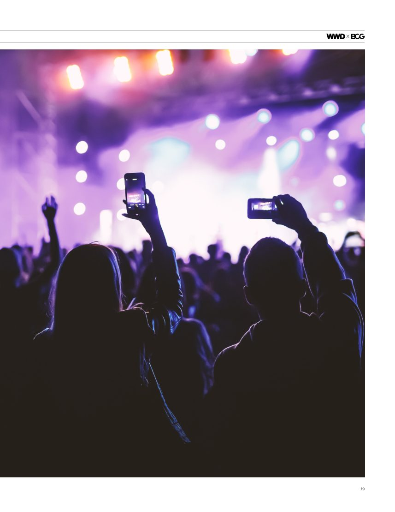
第 20 頁Golden Goose 米蘭運動文化場域實景：［第 20 頁為全版建築攝影（圖片提供：COURTESY OF GOLDEN GOOSE），呈現義大利精品運動鞋品牌 Golden Goose 於米蘭 CityLife 開設之首座板式網球（Padel）社群運動中心「GOLDEN GOOSE / ARENA」，展現品牌將運動熱情、建築美學與青年社群體驗融為一體的實體空間創新。］
第 21 頁青年文化的前沿陣地之一：沉浸式運動參與（Immersive Sports Engagement）
對 Z 世代與 α 世代而言，運動文化始於職業運動員、主流職業聯盟與賽事轉播等傳統核心，但絕不止步於此。鄰近成長領域如今已涵蓋大學與業餘賽事、小眾運動，以及將球鞋（Sneakers）或球衣（Jerseys）視為日常時尚穿搭的生活型態表達。
在最前沿的演進中，運動已變得高度沉浸式、互動化且由創作者驅動（Creator-Driven）。年輕世代透過電競（Esports）、健身網紅、夢幻體育聯盟（Fantasy Leagues）、遊戲與運動博弈積極參與其中。社群平台則促成了全天候不間斷的參與——無論是透過第二螢幕觀賽互動（Second-Screen Viewing）、遊戲化健身應用程式，或是橫跨多重頻道的創作者主導粉絲文化（Creator-Led Fandom）。
| 運動文化擴張維度 | 歷史核心 （Historic Core） |
鄰近成長領域 （Adjacent Growth） |
前沿演進趨勢 （Frontier Evolution） |
|---|---|---|---|
| 運動多元化 （Sports Diversity） |
主流職業聯盟與體育總會（Major leagues and federations） |
・大學與業餘賽事：校內與休閒聯盟、半職業隊伍 ・小眾運動（Niche）：摔角、場地自由車、衝浪、攀岩 |
・科技增強運動（Tech-augmented）：電競聯盟（E-sports leagues）、VR 虛擬實境運動 ・微文化與次文化：泥濘障礙賽（Tough Mudder）、超耐力賽、BMX 極限單車、CrossFit、極限運動、跑酷（Parkour） |
| 參與接觸點 （Engagement Touchpoints） |
賽事轉播與現場觀賽（Broadcast and in-person） | ・延伸媒體（Expanded media）：運動紀錄片／傳記影集、賽後回顧與脫口秀、幕後花絮視角 |
・社群與互動參與：遊戲化運動與健身平台、第二螢幕互動（如 Twitch、Discord、X）、運動博弈、夢幻體育聯盟 ・創作者主導粉絲文化：跨平台運動員創作者、人格魅力與身分認同驅動內容、網紅合作夥伴關係 |
| 文化關聯性 （Cultural Relevance） |
職業運動明星（Pro athlete celebrities） | ・生活型態影響力：休閒與健身潮流、球鞋與球衣時尚化（Sneakers and jerseys as fashion） | ・文化跨界（Cultural crossovers）：時尚／奢侈品聯名、音樂盛事（如中場秀造勢）、影視內容（如 F1《飆風再起》Drive to Survive）、遊戲跨界（如 Roblox 中的 NBA 體驗）、社會運動倡議平台 |
資料來源：BCG 分析（示意架構，非窮盡列舉）。
智者之言（Words of Wisdom）：時尚領袖如何與青年文化及創造力保持緊密連結
Silvio Campara｜Golden Goose 執行長（Chief Executive Officer）
主題：透過文化建立真實連結（Authentically Connecting Through Culture）
「在 Golden Goose，我們透過積極成為年輕消費者世界的一部分，與他們保持緊密連結——開創能讓真實性、情感與自我表達蓬勃發展的空間。我們依據在地品味量身打造系列單品，並透過客製化（Personalization）與稀缺性（Scarcity）來禮讚故事敘事。每一件單品都旨在讓人感受到獨一無二、富含情感價值，並映照出穿戴者個人的獨特靈魂。
自創立之初，Golden Goose 便始終與藝術世界緊密相連。從與威尼斯雙年展（Venice Biennale）及在地藝術家的合作，到我們的門市本身亦扮演『藝術聚落（Artistic Hubs）』的角色——成為年輕創意工作者表達自我、展示作品並分享真實故事的場域。這份連結深化了我們與在地社群的關係，也讓我們時刻與青年文化不斷演進的創作能量保持同頻共振。
與此同時，我們持續強化與運動世界的深厚連結——運動始終是深植於我們品牌 DNA 中的靈感泉源。我們大幅拓展了與滑板社群（Skate Community）的連結，這個宇宙深刻影響了我們的球鞋設計與服飾系列。近期，我們更進一步跨足持拍運動領域，在米蘭 CityLife 開設了品牌首座板式網球中心『Golden Goose Arena』——在這個空間裡，熱情比競技表現更重要，每一場球賽都化為真實人際連結的珍貴時刻。」
第 22 頁趨勢三：社群媒體成為全新主戰場——從漏斗轉向飛輪
SOCIAL MEDIA IS THE NEW BATTLEGROUND — SHIFTING FROM FUNNEL TO FLYWHEEL.
第 23 頁趨勢三核心剖析：全方位商務引擎、創作者主導與四大行為路徑
1. 社群媒體正從品牌探索演進為全方位商務引擎（Social Media Is Evolving From Brand Discovery to a Full Commerce Engine）
28 歲以下的年輕購物者將「網紅內容（Influencer Content）」列為促成購買轉換原因的可能性，是其他年齡層的兩倍（2x）。
2. 創作者主導取代品牌主導（Creator-Led Over Brand-Led）
純粹由品牌官方發布的內容過於靜態單調——今日的病毒式傳播力，源自創作者以及由使用者驅動、能即時點燃參與熱度的雙向對話。
3. 影響力路徑的全新時代（New Era of Influence Pathways）
現代消費者旅程圍繞著四大關鍵行為運轉：串流觀看（Streaming）、滑動態瀏覽（Scrolling）、主動搜尋（Searching）與即時購物（Shopping）。不同於傳統行銷漏斗僵化且循序漸進的線性假設，「影響力圖譜（Influence Mapping）」揭示了多重接觸點是同時重疊且交互影響的。
要徹底釋放社群商務引擎的動能，品牌必須針對不同受眾類型量身制定策略、打造創作者內容矩陣，並靈活運用混合式內容分發格式（Blended Distribution Formats）。
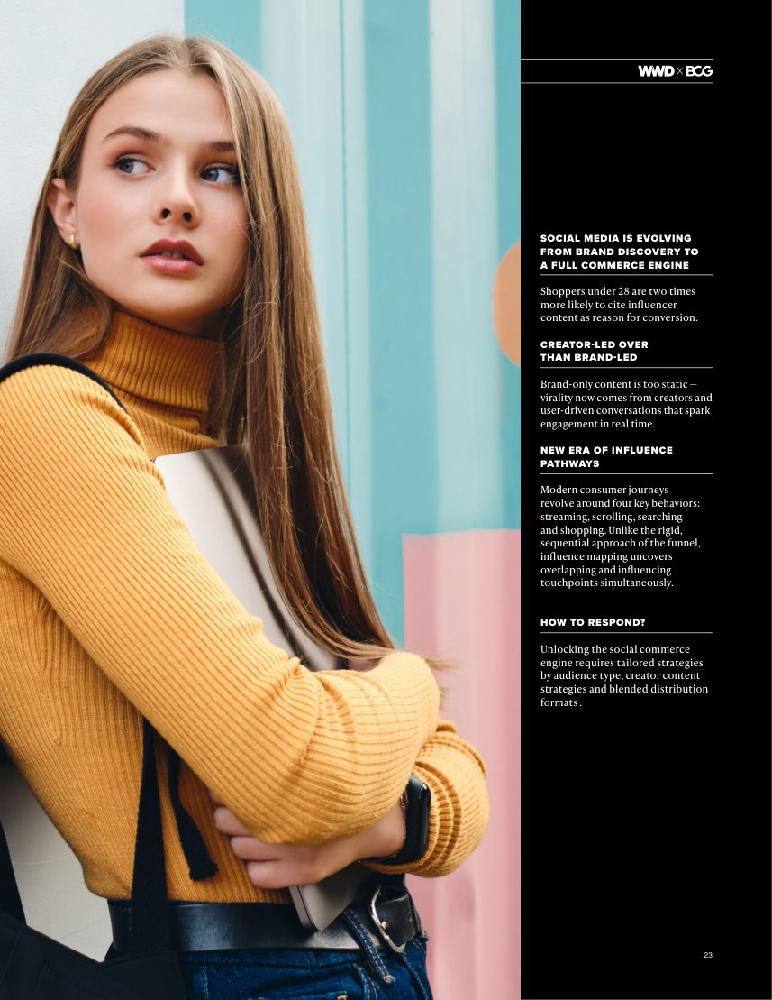
第 24 頁當代時尚消費環境劇變：選項爆炸、廣告飽和與跨品牌購買激增
今日的時尚消費環境截然不同，在每一個階段都充斥著更多選擇
消費者旅程已不再是線性的，因為當代消費者正在經歷三大結構性擴張，且近期人工智慧（AI）的突破性進展也正顛覆品牌與消費者的互動方式：
- 品牌數量史無前例地多（MORE BRANDS THAN EVER BEFORE）
- 探索品牌的管道更加多元（MORE WAYS TO DISCOVER THOSE BRANDS）
- 購買品牌的方式更加多元（MORE WAYS TO SHOP THOSE BRANDS）
當代消費者接觸到的廣告數量超越歷史上任何一個世代……且每年互動購買的品牌數量也遠多於年長世代
| 環境變遷指標 | 過往基準期 | 當代現況（2024–2025 年） | 變化趨勢解讀 |
|---|---|---|---|
| 每日廣告接觸量 （Daily ad exposure, number of ads） |
2007 年：每日 4,000 至 6,000 則廣告（4K–6K） | 2025 年：每日 6,000 至 10,000 則廣告（6K–10K） | 廣告資訊負荷量大幅激增約 +40%，消費者注意力極度稀缺。 |
| 平均每年購買的品牌數量 （Brands shopped annually on average）1 |
2005 年1：平均每年購買 少於 10 個（<10）品牌 | 2024 年1：平均每年購買 15 至 20 個（15 to 20）品牌 | 跨品牌嚐鮮與混搭成為常態，單一品牌獨占衣櫥的時代已經結束。 |
註 1：基於多項調查與公開出版文獻之方向性推估；資料來源：Lunio《2025 年我們每天看到多少則廣告？》（How Many Ads Do We See a Day in 2025?）。
第 25 頁年輕世代五大品牌探索管道與 Tapestry 執行長專訪
社群媒體正為年輕世代從「品牌探索」演進為「全方位商務引擎」
| 年輕消費者探索品牌的前五大管道（Top 5 Ways Young Consumers Discover Brands） | 探索占比（Discovery Likelihood） | 世代傾向比較（29+ 歲 vs. 28 歲以下購物者） |
|---|---|---|
| 1. 數位廣告與線上探索（Digital Advertising and Discovery） | 23% | 28 歲以下年輕購物者透過此管道探索的可能性高出 1.2 倍（1.2x more likely） |
| 2. 零售與實體門市體驗（Retail and in-store experience） | 23% | 偏向 29 歲以上購物者（但對年輕世代仍具並駕齊驅的 23% 高占比） |
| 3. 社群與同儕影響力（Community influence） | 17% | 跨世代均衡並略偏向 28 歲以下年輕購物者 |
| 4. 社群媒體（Social Media） | 13% | 28 歲以下年輕購物者透過社群探索新品牌的可能性高出 1.5 倍（1.5x more likely） |
| 5. 傳統媒體與廣告（Traditional media and advertising） | 9% | 顯著偏向 29 歲以上購物者，對年輕世代貢獻度最低 |
年輕消費者的品牌探索由線上通路領軍，其中「數位廣告」與「社群媒體」是發掘新品牌最具影響力的路徑。零售與實體門市時刻依然重要，但傳統媒體的貢獻度已降至最低。
對 Z 世代與 α 世代而言，商務本質上就是社群化的（Commerce is inherently social），品牌必須將社群媒體平台的角色從單純的「靈感啟發」向上提升。致勝的商業模式並非將「探索」與「交易」切割開來，而是將兩者壓縮融合於同一個當下時刻（Collapsing them into the same moment）：一名消費者可能在朋友的短影音或創作者的貼文中看到某件商品，立即透過擴增實境（AR）濾鏡進行數位試穿，藉由分享或查看同儕反應來驗證自己的選擇，接著無須離開該社群平台便能瞬間完成結帳購買。（頁面配圖來源：COURTESY OF TAPESTRY）
智者之言（Words of Wisdom）：頂尖零售高階主管如何領先掌握不斷演進的消費者旅程
Joanne Crevoiserat｜Tapestry 集團（Coach、Kate Spade 母公司）執行長（Chief Executive Officer）
主題：與你的受眾共同演進（Evolving With Your Audience）
「面對年輕消費者，品牌忠誠度必須透過情感連結來贏得。這意味著要以忠於品牌本質的方式，與他們所珍視的價值觀對齊。我們專注於理解年輕消費者踏入我們品類的那個關鍵時刻，培養更深厚的品牌熱愛（Brand Love），並透過長久穩固的關係創造更高的顧客終身價值（Lifetime Value）。要做好這件事，起點在於透徹認識並深度理解消費者，確保我們的品牌始終具備文化關聯性，並契合他們不斷演變的生活。我們極度重視消費者洞察，將量化數據驅動工具與質性研究相結合，這正是深入理解消費者需求的關鍵所在。
面對年輕消費者，忠誠度源於情感共鳴，也就是以真實可信的品牌姿態呼應他們的價值觀。Coach 的『表達型奢華（Expressive Luxury）』定位，以及 Kate Spade New York 的『振奮人心奢華（Uplifting Luxury）』定位，都深刻呼應了目標年輕消費者所看重的價值。這正是持久成長的基石，也是為何光是去年一年，我們僅在北美市場便成功獲取了 680 萬名新顧客，其中 Z 世代更占據極高比例。我們持續傾聽消費者的聲音，不斷測試並運用數據來指導整個價值鏈的每一項決策——從設計、商品組合規劃（Assortment Planning），一路涵蓋至門市營運、定價與行銷策略。
品牌探索的路徑正在轉變。社群平台固然依舊重要，但隨著 AI 工具與 AI 代理（Agents）快速普及，消費者提問與尋找品牌的方式正在演進。我們正密切研究這些行為，並測試全新的方法與內容，以更精準地回應不斷變化的搜尋提問。透過部署 AI 等先進工具，我們得以最佳化搜尋能見度，並同時實現行銷溝通與購物體驗的個人化。」
第 26 頁第 27 頁跨頁影響力圖譜：傳統漏斗瓦解，轉向橫跨四大行為的網狀觸點生態
跨頁完整標題（第 26–27 頁）：傳統行銷漏斗已不再能反映當今的消費者旅程——如今的旅程高度碎片化，橫跨「滑動態（Scrolling）、搜尋（Searching）、串流（Streaming）與購物（Shopping）」。TikTok Shop 等線上探索暨購物平台以及其他由網紅驅動的新興參與者，更進一步分散了消費者的注意力與支出。
（副標題：現代消費路徑在所有階段皆高度碎片化且具流動性，交織著串流、滑動態、搜尋與購物行為。唯有深刻理解目標消費者，才能精準找出正確的接觸點。）
| 認知階段網狀觸點 （Awareness｜第 26 頁左翼） |
考量階段網狀觸點 （Consideration｜第 26–27 頁中段） |
行動轉換階段網狀觸點 （Action｜第 27 頁右翼） |
|---|---|---|
|
|
|
資料來源：BCG《行銷人員是時候超越線性漏斗了》（It’s Time for Marketers to Move Beyond the Linear Funnel, BCG, 2025）。
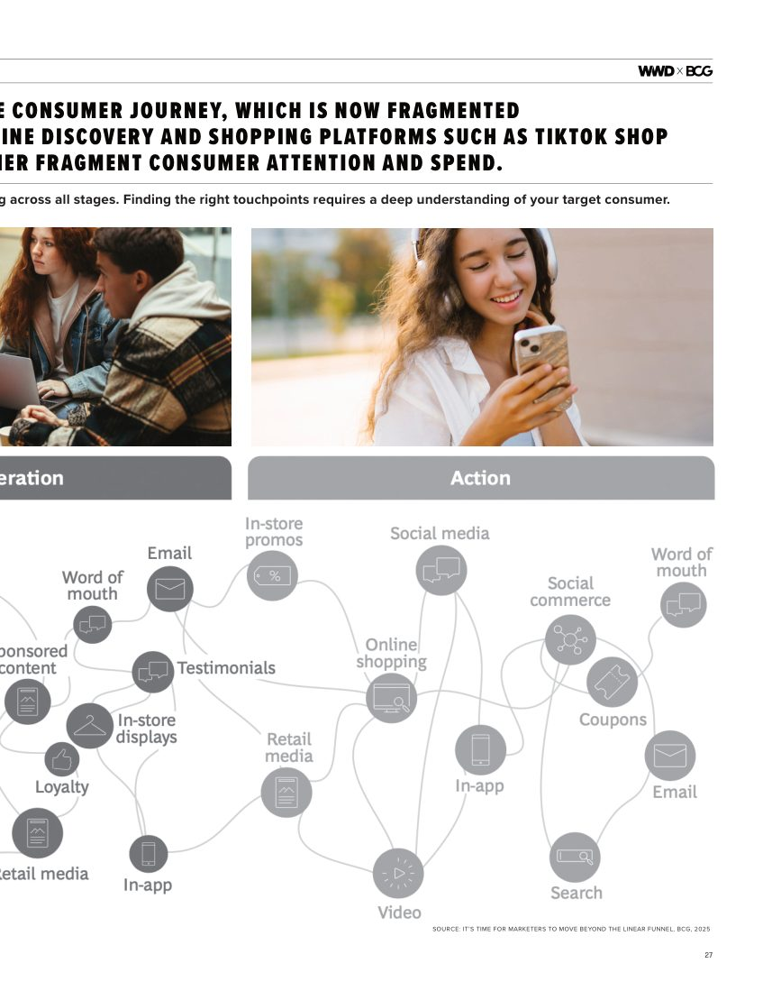
第 28 頁創作者主導探索：微網紅影響力直逼名人巨星
原文標題：DISCOVERY IS OFTEN CREATOR-LED; INFLUENCERS MATTER ALMOST AS MUCH AS CELEBRITIES AS CONSUMERS LOOK FOR MORE AUTHENTIC CONNECTIONS（探索往往由創作者主導；隨著消費者尋求更真實的連結，網紅的重要性幾乎與名人不相上下）
| 服飾品類（Apparel）：與其他年長世代相比，Z 世代與 α 世代呈現以下顯著倍數差異 | |
|---|---|
|
2.0X（2.0 倍）
更可能將「網紅內容（Influencer content）」列為促成購買轉換的原因
|
1.3X（1.3 倍）
更可能將「高粉絲數或社群互動率」視為衡量品牌地位（Brand status）的主要驅動因素
|
由於年輕消費者尋求真實連結，「微網紅（Micro Influencers）」的重要性已幾乎與名人旗鼓相當
| 網紅／影響者量級分類 | 粉絲追蹤人數規模 | 年輕消費者用於「品牌探索」之使用占比（%） |
|---|---|---|
| 微網紅（MICRO INFLUENCER） | 少於 10 萬粉絲（<100k followers） | 22% |
| 中大型網紅（MACRO INFLUENCER） | 10 萬至 100 萬粉絲（100k–1M followers） | 27% |
| 名人／頂流巨星（CELEBRITY） | 100 萬粉絲以上（1M+ followers） | 27% |
資料來源：BCG《2025 年時尚與奢侈品現況調查》（BCG State of Fashion and Luxury Survey 2025）。
第 29 頁美國社群商務突破 800 億美元大關與「制勝社群」實戰矩陣
在社群商務取得成功，意味著選對通路並做好隨時承接爆發需求的準備
截至 2024 年，美國社群商務（Social Commerce）營收已突破 800 億美元（$80 billion），消費者跨足互動的品牌與商品品類數量創下歷史新高。過去曾被視為實驗性質的管道，如今已正式躍居主流。
各大平台已徹底消弭了「探索」與「購買」之間的落差。Instagram Shop（2020 年）、TikTok Shop（2023 年）以及 YouTube 與 Shopify 合作的聯盟行銷計畫（2024 年），紛紛建立起消除交易摩擦的原生購買軌道（Native Purchase Rails）。內容不再只是單純的穿搭靈感，而是能夠「即看即買（Instantly Shoppable）」，大幅縮短了從產生興趣到完成結帳的路徑。
商業整備度（Commercial Readiness）至關重要。品牌必須將可購物內容（Shoppable Content）與後端產品資料流（Product Feeds）及原生結帳流程緊密對齊，同時確保單品項（SKU-level）庫存與規格資訊的絕對精準。促銷機制、倉儲履約與物流配送系統更必須完成調校，以隨時應對病毒式爆紅內容與行銷活動所引發的瞬間需求洪峰。
贏家積極擁抱「通路優先（Channel-First）」策略。領先企業將通路規劃視為動態調整的過程，在社群商務、第三方電商市集（Marketplaces）與品牌自有官網（Owned Destinations）之間靈活再平衡。透過與次世代實際交易的場域保持高度同步，品牌得以在激烈競爭的版圖中確保文化關聯性與營運韌性。
| 時間節點 | 美國社群商務營收成長里程碑（2018–2025 年，由約 150 億美元攀升突破 800–1,000 億美元規模） |
|---|---|
| 2018 年 9 月 | Amazon 推出品牌旗艦店功能（Amazon launches storefronts） |
| 2020 年 7 月 | Instagram 正式推出「商店（Shop）」專屬分頁（Instagram debuts “Shop” tab） |
| 2021 年 6 月 | LTK 擴大推出網紅導購合作夥伴生態（LTK launches influencer partnerships） |
| 2022 年 3 月 | Meta 舉辦首屆元宇宙時裝週（Meta hosts Metaverse Fashion Week） |
| 2023 年 9 月 | TikTok Shop 於美國市場正式上線（TikTok Shop launches） |
| 2024 年 8 月 | YouTube 聯盟導購計畫與 Shopify 達成深度整合合作（YouTube affiliate program partners with Shopify） |
| 2025 年 7 月 | ShopMy 正式推出創作者導購購物平台（ShopMy launches shopping platform） |
資料來源：Capital IQ；美國人口普查局（U.S. Census Bureau）；BCG 分析。
制勝社群：超越品牌自有內容，全面釋放商務引擎（Winning Social: Unlocking the Commerce Engine Beyond Branded Content）
| 1. 受眾策略（Audience） | 2. 內容策略與吸睛語言（Content & Hook Language） | 3. 混合分發機制（Blend Distribution Format） |
|---|---|---|
|
・大眾吸引力（Mass appeal）：切入廣泛的文化話題與季節性潮流。 ・社群契合度（Community fit）：順應品牌追蹤者熱愛的小眾次文化趨勢。 ・核心部落聚焦（Tribe focus）：為核心鐵粉建立鮮明一致的視覺美學風格。 |
四大內容創作鐵律： ① 擁抱自然隨性風格（Embrace casual style） ② 保持輕量化品牌置入（Keep branding light） ③ 讓創作者自己說故事（Let creators tell the story） ④ 在前 2 秒內抓住目光（Hook within first 2 seconds） 各階段吸睛語言（由理性 Rational 至共鳴 Relatable）： ・認知期：實用妙招（Tips/Hacks）、開箱（Unboxing）、發掘潛在需求（Discover needs） ・考量期：三大必買理由（3 reasons why）、產品實測、穿搭場合、受誰啟發推薦、真實評測（Reviews）、留言互動 ・轉換期：限時優惠促銷（Offers/Promos）、痛點與解方（Problem/Solution）、產品核心效益（Product Benefits） |
建立認知（Build awareness）： ・UGC（用戶生成內容）能以低成本擴散潮流（病毒式爆紅雖無法保證，但可透過系統化設計促成）。 ・善用涵蓋奈米、微網紅至大型網紅的全量級影響者。 ・將對的產品精準配對給調性相符的創作者。 高效轉換受眾（Convert audiences，由傳統廣告進階至最高效工具）： ・直播帶貨（Livestreaming）：透過即時雙向互動創造搶購緊迫感。 ・原生推廣廣告（Spark Ads）：一滑即達，讓購物體驗順暢無阻。 ・TikTok Shop 站內商城：以極簡「三步結帳（3-click checkout）」將注意力直接轉化為訂單。 |
資料來源：TikTok 行銷科學《全球吸睛法則研究》（TikTok Marketing Science Global How to Hook Study [U.S., U.K., GCC] 2023，由 MetrixLab 執行）。
第 30 頁趨勢四：AI 以震撼規模滲透時尚購物——40% 年輕消費者已使用 AI 購物
AI HAS PENETRATED FASHION SHOPPING IN A SEISMIC WAY — 40% OF YOUNGER CONSUMERS NOW USE AI TO SHOP, REQUIRING BRANDS TO CRACK THE NEW CODE TO WIN.（要求品牌必須破解全新密碼方能勝出）
第 31 頁趨勢四核心剖析：AI 採用分歧、應用場景與高價值客群先行顛覆
1. AI 採用現況（AI Adoption）
綜觀跨世代整體表現，千禧世代及更年長族群每週使用 AI 的整體比例較高，達 58%，而 Z 世代與 α 世代則為 51%。然而，一個最關鍵的分歧點在於：年輕世代將 AI 應用於「時尚購物」的可能性遠高於年長世代。
2. 核心應用場景（Use Cases）
高達 90% 的 AI 使用消費者每月多次運用 AI 來探索流行趨勢、進行購物前研究，以及執行產品與價格比較。
3. 客群分層效應（Customer Tiering）
高消費力的 Z 世代與 α 世代服飾買家「每天使用 AI」的可能性約為一般年輕買家的 2 倍（2x）；這意味著對品牌最具商業價值的頂層年輕顧客旅程，將最先被 AI 徹底顛覆。
一套強健的「代理式搜尋引擎（Agentic Search Engine）」策略建立在四大支柱之上：針對使用者提問方式進行最佳化、建構 AI 友善的內容架構、管理跨第三方商店與平台的品牌形象，以及在影響力發生的權威資訊場域積極現身。
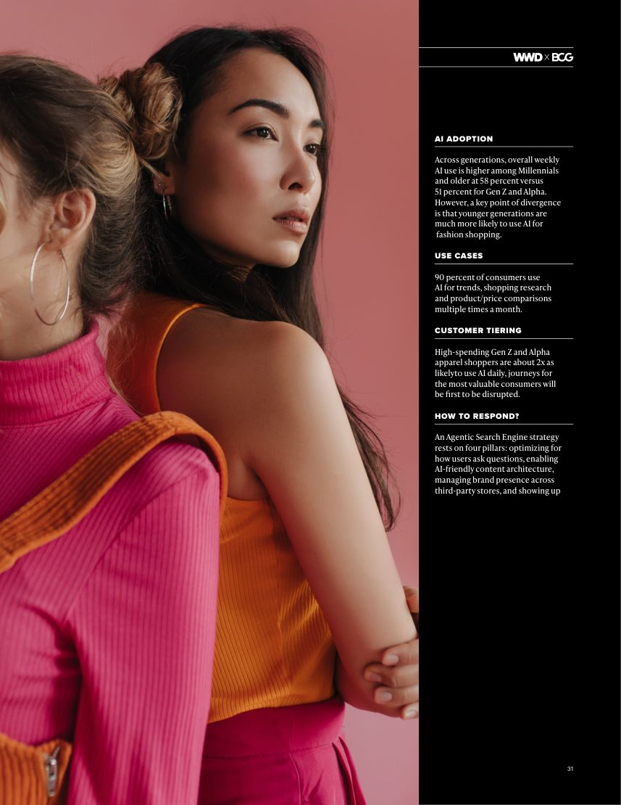
第 32 頁AI 重塑購物版圖：41% 年輕消費者以 AI 作為時尚協同購物夥伴（Co-Shopper）
AI 正顛覆購物版圖，Z 世代與 α 世代躍居 AI 購物工具最熱情的採用者
耐人尋味的是，年長消費者在整體日常生活中的 AI 使用頻率其實略高：千禧世代與更年長族群每週至少使用一次 AI 的比例略高於 Z 世代與 α 世代（58% 對比 51%）。然而，一旦聚焦於「時尚領域」，年輕世代便明顯領先——Z 世代與 α 世代使用 AI 選購時尚單品的比例高達 41%（年長消費者僅為 34%，領先達 7 個百分點），這強烈顯示「時尚」正是許多年輕消費者接觸並導入 AI 的核心入口（Entry Point）。
AI 正在重塑消費者的購物方式，將「靈感啟發」與「實用工具性」無縫融合。年輕購物者紛紛轉向 AI 來發掘新潮流、獲取穿搭造型建議、視覺化預覽整體穿搭效果，並跨零售商比價，使 AI 成為他們時尚購物旅程中值得信賴的「協同購物夥伴（Trusted Co-Shopper）」。
這波轉變也推升了全新的服務期待。諸如虛擬試穿（Virtual Try-Ons）、AI 造型師以及即時產品推薦等新興工具，正在重新定義何謂「優質服務（Good Service）」。儘管目前仍處於早期發展階段，但技術的飛速進步與各大品牌的積極導入，皆預示著 AI 在塑造未來購物體驗中將扮演日益吃重的角色。
- 41% 核心指標：41% 的年輕消費者每週使用 AI 來探索時尚、比較產品並搭配服裝造型。
- 品牌端整合案例（如 Ralph Lauren「Ask Ralph」AI 造型助理）：各大品牌正將虛擬試穿與 AI 造型工具整合進官方網站、行動應用程式（In-App），甚至實體門市體驗之中。
- 第三方擴增實境（AR）工具：第三方 AR 穿搭平台讓購物者能跨品牌自由試穿並混搭不同品牌的服飾單品。
- Google Shopping 整合體驗：Google Shopping 已將虛擬模特兒試穿功能與一鍵購買流程無縫整合。
Z 世代與 α 世代的 AI 使用與時尚購物旅程緊密掛鉤，高消費年輕服飾買家每日使用 AI 的機率高達兩倍
| 表 A：跨世代生成式 AI 使用對比（占時尚購物者之百分比） | ||
|---|---|---|
| 行為層級 | α 世代與 Z 世代（Gen Alpha & Gen Z） | 千禧世代及以上（Millennial and older） |
| 時尚購物者基數（Fashion shoppers） | 100% | 100% |
| 每週至少使用一次 AI（Use AI at least once a week） | 51% | 58% |
| 使用 AI 選購時尚單品（Shop for fashion items with AI） | 41%（高出年長世代 +7 個百分點） | 34% |
| 表 B：Z 世代與 α 世代依「過去 12 個月服飾消費金額」劃分之生成式 AI 使用頻率 | |||
|---|---|---|---|
| AI 使用頻率 | 低消費客群（<$500 美元） | 中消費客群（$500–$1,000 美元） | 高消費客群（$1,000+ 美元） |
| 每日使用（Daily） | 22% | 24% | 45%（約為中低消費者的 2 倍［2x］） |
| 每週使用（Weekly） | 12% | 6% | 32%（週用＋日用合計高達 77%） |
| 每月使用（Monthly） | 19% | 16% | 5% |
| 完全未使用（No usage） | 47% | 54% | 僅 18% |
數據深度解讀：在 α 世代與 Z 世代內部，AI 使用頻率隨服飾支出規模顯著攀升。輕度消費者多屬偶爾使用或未使用者；然而一旦年均服飾支出跨越約 1,000 美元（$1,000）門檻，使用行為便高度集中於「每週」與「每日」高頻使用，未使用比例驟降至 18%。此一型態證實：對於商業價值最高的頂層年輕客群而言，AI 已成為預設的日常購物隨行夥伴（Default Companion），而非偶一為之的輔助工具。
資料來源：BCG《2025 年時尚與奢侈品現況調查》（BCG State of Fashion and Luxury Survey 2025）。
第 33 頁年輕 AI 使用者各場景頻率分布與 Ralph Lauren 全球行銷長專訪
儘管「學習／課業研讀」是年輕用戶最高頻的用途，但「搜尋潮流趨勢、購物輔助與產品／價格比較」亦極為普遍
| AI 應用場景（Use Case Among AI Users） | 從不／極少使用 （Never / Very infrequently） |
每月使用多次 （Multiple times a month） |
每週使用多次以上 （Multiple times a week or more） |
每月多次以上合計 |
|---|---|---|---|---|
| 1. 學習／課業研讀（Learning / studying） | 5% | 34% | 61% | 95% |
| 2. 探索新潮流趨勢（Exploring new trends）［時尚高度相關］ | 7% | 36% | 57% | 93% |
| 3. 編輯內容（Editing content） | 10% | 34% | 57% | 91%（進位差異） |
| 4. 自我反思與探索（Self-reflection） | 11% | 33% | 56% | 89% |
| 5. 休閒娛樂（Entertainment） | 8% | 39% | 53% | 92% |
| 6. 購物輔助與建議（Shopping assistance）［時尚高度相關］ | 10% | 38% | 52% | 90% |
| 7. 比較產品與價格（Comparing products）［時尚高度相關］ | 15% | 35% | 51% | 86% |
| 8. 視覺內容生成與處理（Visual content） | 11% | 39% | 49% | 88% |
| 9. 旅遊行程規劃（Itineraries） | 15% | 39% | 46% | 85% |
資料來源：BCG《2025 年時尚與奢侈品現況調查》（BCG State of Fashion and Luxury Survey 2025）。
智者之言（Words of Wisdom）：行銷領袖如何擁抱 AI 以驅動顧客終身價值
Iris Langlois-Meurinne｜Ralph Lauren 全球行銷長（Global Chief Marketing Officer）
主題：擁抱 AI 新時代（Embracing the New Era of AI）
「人工智慧（AI）正在改變顧客的期待與行為，模糊了『靈感啟發』與『商業交易』之間的界線。在 Ralph Lauren，我們對次世代（Next Gen）的思維模式建立了深刻理解——包括他們數位優先（Digital-First）的行為習慣、價值觀驅動的決策過程，以及他們對當今世界『何謂奢華（Luxury）』的重新定義。
當今的消費者希望同時獲得娛樂性、便利性與尊榮服務。Ralph Lauren 的核心始終在於說故事（Storytelling），並邀請消費者走進電影質感般的世界與沉浸式體驗之中。以此為根基，我們積極擁抱這個新時代，打造能夠規模化提供娛樂體驗與穿搭造型服務的全新契機。我們正在重新構想完整的行銷漏斗，運用創新工具、預測分析（Predictive Analytics）與 AI 來提升顧客體驗，進而推升顧客終身價值（Lifetime Value）。
在穿搭造型方面，年輕消費者極度重視個人化、創造力與自我表達。這些正是我們品牌本質的核心元素，而 Ralph 經典且獨樹一幟的造型美學則提供了源源不絕的靈感。我們正致力於將這項優勢規模化交付——融合人類創造力、數據、消費者洞察與預測分析，協助顧客以真實且充滿啟發性的方式展現個人獨特風格。這不僅深化了我們與顧客的關係，更築起了長遠的終身價值。
我們專注於在受眾真正投入時間的場域積極現身，例如大型語言模型（LLMs）、TikTok、WeChat（微信）、YouTube 以及電玩遊戲世界。同時，我們也大力投資 AI 以啟發顧客並改善探索體驗，例如在 Ralph Lauren 行動應用程式中正式推出全新的 AI 造型助理——『Ask Ralph』。」
第 34 頁重塑可發掘性：強健的「解答引擎最佳化（AEO）」策略四大支柱
原文標題：REIMAGINING DISCOVERABILITY — A STRONG ANSWER ENGINE OPTIMIZATION STRATEGY RESTS ON FOUR PILLARS
| AEO 策略支柱 | 關鍵執行作法與實證依據 |
|---|---|
| 支柱一：針對使用者提問方式進行最佳化 （Optimizing for How Users Ask Questions） |
AI 偏好簡潔、基於事實且具權威性的內容。能夠直接回答使用者常見問題的內容，被 AI 選中引用的機率遠高於傳統文案。 透過重點摘要（Summaries）、編號清單、問答集（Q&As）以及標籤清晰的段落標題來對應自然語言提問（Natural Language Queries），能大幅提升品牌出現在 AI 生成解答中的機率。 |
| 支柱二：建構 AI 友善的內容架構 （Enabling AI-Friendly Content Architecture） |
根據近期針對 ChatGPT、Perplexity 以及 Google AI Overviews 中最常被引用之前 10% 網頁所進行的分析顯示：內容深度（包含周延解釋的完整語句）與可讀性（例如 Flesch Reading Ease 易讀性指標分數），同樣是預測 AI 能見度的高強度指標。 |
| 支柱三：管理跨第三方商店與平台的品牌形象 （Managing Brand Presence Across Third-Party Stores） |
AI 解答引擎絕不僅僅從你的品牌官網抓取資料。從 Reddit 論壇、產品評論網站，到新聞報導與社群媒體，各類第三方資訊來源共同塑造了品牌的數位全貌。 若品牌在這些外部管道上的訊息前後矛盾或存在錯誤，就可能面臨被 AI 忽略甚至誤導呈現的風險。確保品牌出現的每一個角落資訊皆精準一致，已不再是「可選項」——而是維持能見度與公信力的生存關鍵。 |
| 支柱四：在影響力發生的權威場域現身 （Showing Up Where Influence Happens） |
諸如 ChatGPT 等 AI 解答引擎高度青睞來自權威網域（Authoritative Domains）的內容——數據明確證實了這一點：Wikipedia（維基百科）、G2、Forbes（富比士）與 Amazon 主導了 AI 引用量，其中 Wikipedia 更以高達 130 萬次引用（1.3 million citations）的懸殊優勢高居榜首。 若想提升在 AI 生成解答中的能見度，品牌必須出現在 AI 原本就會前往搜尋可信資訊的地方。透過內容聯播授權（Syndication）、客座專欄投稿或策略夥伴合作來強化在這些高信任度來源上的曝光，能顯著提高品牌被 AI 引用的機會。 |
第 35 頁第 36 頁第 37 頁AI 與代理式商務時代下，品牌與零售商的三大當務之急
第 35 頁篇章視覺頁：［第 35 頁為 WWD × BCG 全版時尚肖像攝影頁，呈現佩戴鮮明亮橘色鏡框墨鏡之年輕女性特寫，象徵新世代鮮明大膽的個人風格與視覺焦點。］
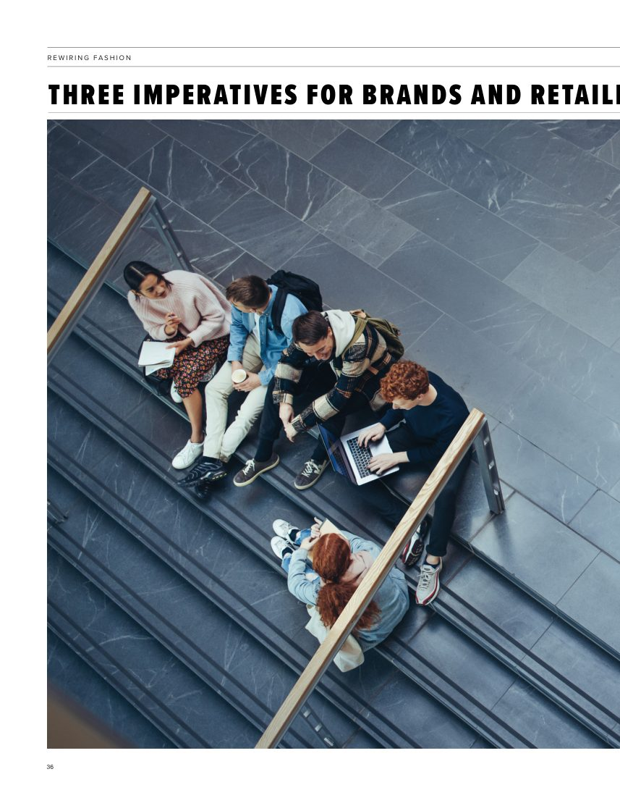
第 37 頁AI 與代理式商務時代三大當務之急（Three Imperatives for Brands and Retailers in the Age of AI and Agentic Commerce）
| 三大當務之急（Imperatives） | 核心課題與具體行動方案 |
|---|---|
| 1. 具備策略思維（BE STRATEGIC） 決定是否以及如何布局 ChatGPT（Decide Whether and How to Play on ChatGPT） |
・目的地策略（Destination game）：將顧客導流回品牌自有通路（Owned Channels），以保護利潤率與品牌體驗完整性。 ・評估推薦策略（Evaluation game）：爭取獲得 AI 代理（Agents）主動推薦，藉此參與高速成長的新興通路並吸引全新客群。 |
| 2. 確保高能見度（BE VISIBLE） 投資解答引擎最佳化（Invest in Answer Engine Optimization, AEO） |
・發布高品質且具權威性的深度內容。 ・最佳化品牌在大型語言模型（LLM）擷取來源上的表現（例如第三方評論網站、Google 商家檔案 Google Business Profiles）。 ・使用清晰簡練的結構化語言（常見問答 FAQs、重點摘要）。 ・前瞻測試未來的 AI 搜尋廣告（Test AI Search Ads）。 |
| 3. 確保資訊精準（BE ACCURATE） 掌握 AI 代理對品牌的敘述（Control What Agents Say About You） |
・將產品詳情頁（PDPs, Product Detail Pages）結構化，以利 AI 代理精準讀取解析。 ・參與開放原始碼協定（例如 OpenAI 推出的代理式商務協定 ACP1），確保商品與庫存數據即時更新，並依品牌設定的條件安全共享。 ・開發 ChatGPT 專屬應用程式（Apps），讓品牌產品能直接在使用者的對話查詢中原生呈現。 |
註 1：ACP 指由 OpenAI 提出之「代理式商務協定（Agentic Commerce Protocol）」；資料來源：BCG 分析。
第 38 頁趨勢五：這個世代以「產品驅動」取代「品牌驅動」——凸顯價格與品質基本盤
THIS GEN IS PRODUCT-DRIVEN OVER BRAND-DRIVEN — ACCENTUATING FUNDAMENTALS ON PRICE AND QUALITY.
第 39 頁趨勢五核心剖析：產品忠誠度、定價品質與二手轉售價值方程式
1. 產品忠誠度大於品牌忠誠度（Product Loyalty Over Brand Loyalty）
Z 世代與 α 世代優先選擇具獨特性的單品（Distinctive Products）而非傳統歷史名牌（Heritage Brands），預示著傳統品牌忠誠度的消退（在運動機能等表現型品類中尤為明顯）。
2. 定價與品質仍是最關鍵要素（Pricing and Quality Still Most Critical）
具競爭力的定價（特別是在代理式 AI 購物帶來高度價格透明度的環境下）、折扣促銷以及產品品質，依然是消費者決定「去哪裡購物」時最重要的考量因素。
3. 轉售保值潛力是價值方程式的重要一環（Resale Potential Is an Important Part of the Value Equation）
年輕消費者——尤其是嚮往型買家（Aspirational Buyers）——在做購買決策時，除了考量整體品牌地位外，也會一併權衡單一產品未來的二手轉售財務回報（Financial Return）。
回歸商業基本面（Back to the Basics）——專注於以合理正確的價格提供高品質產品，依然是消費者決定在何處消費時最關鍵的決定性因素。
第 40 頁品牌忠誠度消退數據（-20 個百分點）與五大時尚品類轉換驅動因子
Z 世代與 α 世代優先重視獨特產品而非傳統名牌，固定依品牌購物的可能性比年長世代低了 20 個百分點
隨著文化週期加速運轉，Z 世代與 α 世代正在重新定義他們與時尚互動的方式。不同於過去對特定時裝屋建立長久忠誠度的年長世代，這群年輕消費者更看重在當下時刻讓人覺得獨特、具文化共鳴且能表達自我的單品。他們將經典老牌與新興獨立設計師品牌自由混搭，藉此策展個人身分認同，而非效忠於單一品牌。
這種背離傳統品牌忠誠度的轉變意味著：今日的品牌共鳴，較少來自過往歷史光環，更多取決於能否在正確的文化時刻交付正確的產品。對品牌而言，挑戰不僅在於捕捉這些瞬間，更在於如何將單次爆款熱度轉化為持久的顧客關係——從而穩固掌握次世代時尚核心消費群。
| 奢侈品購買動機調查：依「品牌」對比依「產品」選購比例（Brand vs. Product） | |||
|---|---|---|---|
| 購買決策傾向（由品牌導向至產品導向） | 千禧世代及以上（Millennial & Older） | α 世代與 Z 世代（Gen Alpha & Gen Z） | 跨世代關鍵差距 |
| 總是購買同一品牌（Always same brand） | 24% | 26% | 固定依品牌購買合計（前兩項）： 千禧世代以上 68% vs. 次世代 48% → 年輕世代大幅低了 20 個百分點（-20pp）！ |
| 大多購買同一品牌（Mostly same brand） | 44% | 22% | |
| 品牌與產品並重（Mix of brand & product） | 18% | 24% | 年輕世代混搭彈性更高（+6pp） |
| 主要依產品挑選（Mostly by product） | 8% | 22% | 年輕世代以產品為核心的比例接近 3 倍（+14pp） |
| 完全只看產品挑選（Only based on product） | 5% | 6% | 兩世代持平微增（+1pp） |
具競爭力的定價與產品品質，是驅動購買轉換最關鍵的兩大核心要素
以下為消費者決定「在哪裡購物」時各品類最重要的驅動因子排序（涵蓋價格價值 Value、選品豐富度 Assortment、購物體驗 Experience 與購物便利性 Ease of Shopping 四大構面）：
| 重要性排序 | 一般服飾 （Apparel） |
運動休閒服 （Activewear） |
時尚鞋履 （Fashion Footwear） |
專業運動鞋 （Athletic Footwear） |
奢侈品 （Luxury Goods） |
|---|---|---|---|---|---|
| 第 1 名 | 具競爭力的價格 ［價格價值］ |
高品質產品 ［選品品質］ |
具競爭力的價格 ［價格價值］ |
高品質產品 ［選品品質］ |
客戶服務 ［購物體驗］ |
| 第 2 名 | 促銷／折扣優惠 ［價格價值］ |
具競爭力的價格 ［價格價值］ |
促銷／折扣優惠 ［價格價值］ |
具競爭力的價格 ［價格價值］ |
愉悅的購物體驗 ［購物體驗］ |
| 第 3 名 | 廣泛多元的選品 ［選品豐富度］ |
促銷／折扣優惠 ［價格價值］ |
優質品牌陣容 ［選品豐富度］ |
優質品牌陣容 ［選品豐富度］ |
奢華尊榮體驗 ［購物體驗］ |
| 第 4 名 | 退換貨政策 ［購物便利性］ |
優質品牌陣容 ［選品豐富度］ |
廣泛多元的選品 ［選品豐富度］ |
客戶服務 ［購物體驗］ |
評價比較 ［購物便利性］ |
| 第 5 名 | 愉悅的購物體驗 ［購物體驗］ |
客戶服務 ［購物體驗］ |
便利的門市位置 ［購物便利性］ |
順道購買其他商品的便利性［便利性］ | — |
| 第 6 名 | 便利的門市位置 ［購物便利性］ |
退換貨政策 ［購物便利性］ |
評價比較 ［購物便利性］ |
快速到貨 ［購物便利性］ |
— |
| 第 7 名 | 優質會員忠誠計畫 ［價格價值］ |
快速到貨 ［購物便利性］ |
— | — | — |
資料來源：BCG《2025 年時尚與奢侈品現況調查》（BCG State of Fashion and Luxury Survey 2025）。
第 41 頁全價格帶高接觸個人化服務期待與 Kallmeyer 創辦人專訪
年輕購物者在所有價格帶皆期待高接觸、個人化的貼心服務（Young Shoppers Expect High-Touch, Personalized Services at All Price Points）
年輕消費者在選購服飾時固然優先重視價格與商品組合，但他們的期待絕不僅止於此。Z 世代與 α 世代即便在購買入門平價單品（Entry Price Points）時，同樣期待獲得個人化服務，這正在徹底重塑時尚零售業對「價值（Value）」的定義。
如今有近半數年輕消費者期待獲得專屬尺寸與版型合身度建議，以及量身打造的個人化產品推薦。在線上購物時，年輕世代更將「虛擬造型諮詢」與「真人造型顧問即時線上對談」視為基本標準配備（Standard Offerings），而非額外尊榮禮遇（Perks）。
| 年輕服飾購物者視為「標準配備」之個人化服務項目 | 期待作為標配之比例（%） |
|---|---|
| 1. 專屬尺寸或版型合身度建議（Tailored size or fit guidance） | 48% |
| 2. 個人化產品推薦（Personalized product recs） | 45% |
| 3. 獨家商品搶先選購權（Early access to exclusive items） | 41% |
| 4. 實體門市專屬顧問或線上真人造型顧問即時對談（Personal advisor in store or live style advisor chat） | 30% |
| 5. 購後關懷與追蹤訊息（Follow-up messages post purchase） | 28% |
| 6. 現場或虛擬造型諮詢課程（Live or virtual styling sessions） | 23% |
資料來源：BCG《2025 年時尚與奢侈品現況調查》（BCG State of Fashion and Luxury Survey 2025）。
智者之言（Words of Wisdom）：開創性品牌如何將顧客的真實生活置於首位，讓奢華變得平易近人且真實可信
Daniella Kallmeyer｜Kallmeyer 創辦人暨執行長（Founder & Chief Executive Officer）
主題：兼具獨到品質與平易近人的百搭實穿性（Matching Discerning Quality With Accessible Versatility）
「與其說我是時裝設計師，我更視自己為一名『問題解決者（Problem-Solver）』。我專注於如何解決現代女性日常生活中的穿搭難題，而年輕消費者正在塑造這個方向。她們的生活型態極度多元百變，需要更高的靈活性，這使得『奢華（Luxury）』對她們而言具有截然不同的意義。我常問自己——什麼樣的衣櫥能契合她的生活型態，同時讓她感到自在舒適？對我來說，奢華意味著打造出最美好的事物，讓人們在穿著舒適自在的前提下，感受到自己能夠成為最深刻、最豐盛的自己。
從創立的第一天起，我便以直接面對消費者（DTC）的模式打造 Kallmeyer。在追求成為一個『時尚品牌』之前，我優先考量的是讓顧客能夠以平易近人的價格帶（Accessible Price Point）擁有一件精品級產品。我甚至無法想像運用自己在奢侈品領域的專業技藝，去設計出連我的朋友、同儕或家人都負擔不起的衣服。因此，我打造了一個同時兼具『親民可及性』與『精湛工藝專業』的品牌。
最令我困擾的，是看到一名時尚消費者望著塞滿衣服的衣櫥，卻覺得自己『沒有衣服可穿』——因為她過去買下的全是基於別人設定的行銷推播單品。我們打造的是服務真實女性日常生活的產品，但同時堅持『品質至上（Quality First）』。一位原本負擔得起更昂貴精品的女性，可以選擇我們的產品並穿得自在舒適，在日常穿著與購買時不必覺得過度『嬌貴拘謹（Precious）』；與此同時，我們也成功擄獲了嚮往型年輕消費者（Aspiring Consumer），引導她們認識卓越品質、合身剪裁以及貼合當下生活且能長久實穿的造型價值。
當你為人們設計衣著時，必須對所創造的每一個時刻保持高度用心。我喜歡將我們視為『溫暖、友善時尚（Warm, Kind Fashion）』的前沿代表。我們不想塑造出一種高高在上、排他性強的品牌形象；相反地，我們希望建立體貼周到、品味獨具且親切友善的品牌風貌——尤其在我們積極拓展數位版圖之際。我們正著手將顧客在實體店裡深深喜愛的個人化導購體驗、產品知識教育與穿搭造型專業，完整複製延伸至線上通路。」
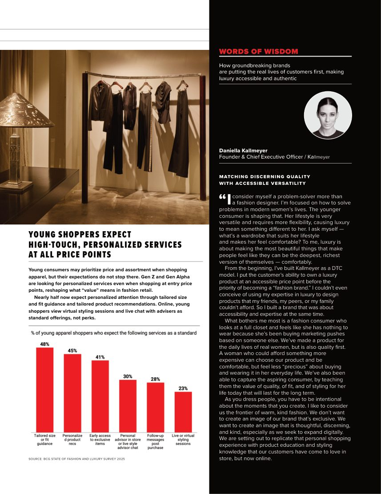
第 42 頁第 43 頁制勝策略總藍圖：次世代時尚族群要求全新的思考、建構與致勝之道
跨頁總標題（第 42–43 頁）：FASHION’S NEXT GEN DEMANDS NEW WAYS TO THINK, BUILD AND WIN — WINNING WITH FASHION’S NEXT GEN（次世代時尚族群要求全新的思考、建構與致勝之道——贏得次世代時尚族群的青睞）
綜合上述五大趨勢洞察與領袖實務經驗，WWD 與 BCG 提出涵蓋「戰場選擇、服務主張、制勝關鍵、能力建構、領先布局及效率與賦能基石」的全方位策略行動藍圖：
第 42 頁策略維度一：戰場選擇（WHERE TO PLAY）——確立目標客群與次世代成長角色
確立誰是你的目標消費者，以及 Z 世代與 α 世代在品牌成長藍圖中扮演的角色（DETERMINE WHO YOUR TARGET CONSUMER IS AND THE ROLE GEN Z AND GEN ALPHA PLAY IN YOUR GROWTH.）
深入理解他們珍視什麼價值、如何生活、渴望什麼產品與體驗，並掌握如何依據他們在品牌客群結構中的角色，以正確的語彙與他們對話，同時建立明確的客群獲取目標與關鍵績效指標（KPIs）。
策略維度二：服務與價值主張（WHAT TO OFFER）——於實體與線上規模化「白手套級」貼心服務
在實體門市與線上通路規模化推展「白手套級」尊榮服務（SCALE WHITE GLOVE SERVICES IN PERSON AND ONLINE.）
跨越價格帶限制，開發並規模化部署個人化、高接觸（High-Touch）的顧客體驗，核心聚焦於專屬尺寸與版型合身度指導（Fit Guidance）、個人化產品推薦、穿搭造型建議及即時顧問互動。
策略維度三：制勝關鍵（HOW TO WIN）——擁抱並極度專注於青年文化共鳴
積極擁抱並全神貫注於青年文化關聯性（EMBRACE AND OBSESS WITH YOUTH CULTURAL RELEVANCE.）
適度放手將敘事控制權交予內容創作者（Relinquish control to content creators），主動發掘並攜手微網紅（Micro Influencers），由真實創作者能量共同驅動內容創作、產品共創與行銷傳播。
第 43 頁策略維度四：核心能力建構（WHAT TO BUILD）——建構並啟動未來的社群商務引擎
建構並全面啟動未來的社群商務引擎（BUILD AND ACTIVATE THE SOCIAL COMMERCE ENGINE OF THE FUTURE.）
打造個人化、由 AI 驅動的全通路（Omnichannel）消費旅程，徹底消弭並融合「靈感啟發（Inspiration）」與「即時購買（Purchase）」之間的界線，並強化 SKU 級別商品資料流與爆發需求履約能力。
策略維度五：領先布局與基本盤強化（HOW TO GET AHEAD & FUNDAMENTALS）——布局 AI 代理引擎最佳化並強化性價比與組織賦能
1. 為取代傳統搜尋的「AI 代理引擎最佳化（AEO）」做好萬全準備（PREPARE FOR AI AGENT ENGINE OPTIMIZATION IN PLACE OF TRADITIONAL SEARCH.）
針對 AI 時代重新構想數位能見度（Digital Visibility），聚焦於當代使用者如何改變搜尋與提問方式、轉而依賴 AI 代理而非傳統搜尋引擎，並推動品牌內容由「人類易讀」全面升級為「機器易讀」。
2. 以核心價值主張驅動營運效率，為消費者創造更優異的性價比（DRIVE EFFICIENCIES WITH A CORE PROPOSITION TO GENERATE BETTER PRICE TO VALUE FOR THE CONSUMER.）
全面最佳化促銷折扣策略（Promotional Strategy）、會員忠誠計畫（Loyalty Program）、商品企劃組合策略（Merchandise Strategy）以及整體成本結構，藉此提升營運效率並回饋於極具競爭力的產品品質與價格價值。
3. 投資關鍵賦能要素（INVEST IN THE ENABLERS.）
建立深諳人工智慧（AI）與青年文化的敏捷跨職能團隊（Agile Teams），並大力投資即時數據管線（Data Pipelines），使組織能以趕上次世代潮流更迭的速度即時反應。